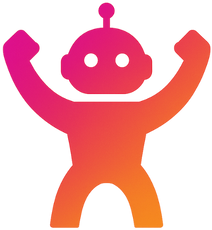
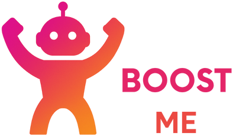
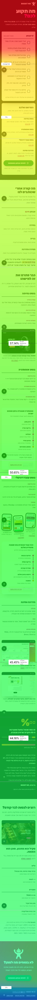

boost-me.digitalהפסיכולוגיה של עמודי נחיתה, ואיך להשתמש ב-AI כדי לבנות אותם טוב יותר.
גל · BOOST ME
מה בתכנית
מי אני
15+ שנה בשיווק דיגיטלי

אתר צומת. בוחרים לאן לנסוע.
עמוד נחיתה חד-סטרי. כיוון אחד.
שאלה לצ'אט
כתבו בצ'אט.
המקרה שלנו
נראה טוב, נכון? תזכרו אותו.
ארבע פעולות ארבע יציאות.
פעולה אחת בכל הכפתורים.
מפת גלילה אמיתית · העמוד של BOOST ME · נייד
ככל שיורדים,
יותר נוטשים.
ב-Clarity (חינם) רואים את זה על העמוד שלכם.

Pain
הבעיה שהמוצר או השירות פותר
Pleasure
החיים אחרי שהבעיה נפתרה
אותו מוצר. מצב אחר.
מחקר בודד, מדגם קטן: רמז, לא חוק. תמהיל, לא בחירה: מה שקובע הוא המוצר יחד עם המצב.
Chernev, 2004 · Journal of Consumer Psychology
בראש של הלקוח
"כולם" זה לא קהל.
אני רוצה לדייק מי הלקוח שלי. תראיין אותי.
המוצר או השירות שלי: [ ]
כללים:
בסוף הראיון, סכם את הלקוח שלי בשבע שורות:
ליד כל שורה סמן 🟢 אם זה מהתשובות שלי, או 🟡 אם זו הסקה שלך.
אני רוצה לדייק מי הלקוח שלי. תראיין אותי.
המוצר או השירות שלי: [ ]
כללים:
- שאל שאלה אחת בכל פעם, וחכה לתשובה.
- עד 8 שאלות. אם תשובה כללית מדי ("כולם", "נשים", "עסקים קטנים"), שאל שאלת המשך אחת שמחדדת.
- אל תציע תשובות ואל תנחש. את התשובות אתה מקבל ממני, אתה רק שואל.
בסוף הראיון, סכם את הלקוח שלי בשבע שורות:
1. מה הוא רוצה
2. מה כואב לו עכשיו (במילים שלו, לא במילים שיווקיות)
3. מה הוא כבר יודע
4. מה הוא לא מבין
5. ממה הוא חושש
6. במה הוא לא מאמין
7. מה הוא כבר ניסה ולא עבד
ליד כל שורה סמן 🟢 אם זה מהתשובות שלי, או 🟡 אם זו הסקה שלך.
ירוק: מהתשובות שלי. צהוב: הסקה של ה-AI. אפשר להריץ את אותו ראיון מול הלקוח שלכם.
מסגרת שלי, לא מחקר. השאלות כלליות, ואצל כל לקוח הן מתחדדות אחרת.
כמו ההוק בטיקטוק. זה מהניסיון שלי, לא מחקר.
הכותרת נותנת את הכאב
‹הכאב, במילים שלו›
הכפתור נותן את החיים שאחרי
אני רוצה תינוק רגועתבנה לי עמוד נחיתה.
מה אני מוכר: [ ]
המטרה של העמוד, מה צריך לקרות כשלוחצים על הכפתור: [ ]
הפרטים שרק אני יודע (תאריך, שעה, מחיר, מה מגיע אחרי ההרשמה, איזה ליווי יש): [ ]
הוכחות אמיתיות שיש לי (תוצאות, המלצות, תמונות): [ ]
הלקוח שלי בשבע שורות (מהראיון): [הדביקו כאן]
בנה את העמוד לפי העקרונות האלה:
1. כאב או תענוג: לפי מה שאני מוכר ולפי המצב שבו הלקוח מגיע, החלט לאיזה קצה העמוד מדבר, לבעיה שאני פותר או לחיים אחרי שהיא נפתרה, ופתח משם.
2. שש השאלות: הלקוח שואל את עצמו: מה זה? זה בשבילי? הבנתי מה מציעים? למה שאאמין? מה הסיכון? מה יקרה אם אלחץ? חדד כל שאלה לפי הלקוח שלי (במה בדיוק?), וענה על כל אחת במקום שבו היא עולה. השאלות הן כלי בשבילך, לא כותרות לעמוד: הכותרות עונות עליהן, ולא חוזרות עליהן.
3. מראה, לא כאבים: תן ללקוח לזהות את עצמו בתיאור ניטרלי של המצב שלו.
4. הוכחה, לא הבטחה: השתמש רק בהוכחות שנתתי. מה שחסר, כתוב "חסר" ואל תמציא.
5. פעולה אחת: מטרה אחת, וכל הכפתורים בעמוד עושים את אותה פעולה. הכפתור מבטיח את מה שהלקוח מקבל, לא את הפעולה עצמה (לא 'מקום בסדנה', אלא מה שיוצאים איתו). ליד הכפתור: הפרטים, ומה יקרה אחרי הלחיצה.
לפני שאתה כותב, הצג לי בקצרה: לאיזה קצה בחרת ולמה, ואת שש השאלות כפי שחידדת אותן. חכה לאישור שלי, ורק אז כתוב את העמוד.
תבנה לי עמוד נחיתה. מה אני מוכר: [ ] המטרה של העמוד, מה צריך לקרות כשלוחצים על הכפתור: [ ] הפרטים שרק אני יודע (תאריך, שעה, מחיר, מה מגיע אחרי ההרשמה, איזה ליווי יש): [ ] הוכחות אמיתיות שיש לי (תוצאות, המלצות, תמונות): [ ] הלקוח שלי בשבע שורות (מהראיון): [הדביקו כאן] בנה את העמוד לפי העקרונות האלה: 1. כאב או תענוג: לפי מה שאני מוכר ולפי המצב שבו הלקוח מגיע, החלט לאיזה קצה העמוד מדבר, לבעיה שאני פותר או לחיים אחרי שהיא נפתרה, ופתח משם. 2. שש השאלות: הלקוח שואל את עצמו: מה זה? זה בשבילי? הבנתי מה מציעים? למה שאאמין? מה הסיכון? מה יקרה אם אלחץ? חדד כל שאלה לפי הלקוח שלי (במה בדיוק?), וענה על כל אחת במקום שבו היא עולה. השאלות הן כלי בשבילך, לא כותרות לעמוד: הכותרות עונות עליהן, ולא חוזרות עליהן. 3. מראה, לא כאבים: תן ללקוח לזהות את עצמו בתיאור ניטרלי של המצב שלו. 4. הוכחה, לא הבטחה: השתמש רק בהוכחות שנתתי. מה שחסר, כתוב "חסר" ואל תמציא. 5. פעולה אחת: מטרה אחת, וכל הכפתורים בעמוד עושים את אותה פעולה. הכפתור מבטיח את מה שהלקוח מקבל, לא את הפעולה עצמה (לא 'מקום בסדנה', אלא מה שיוצאים איתו). ליד הכפתור: הפרטים, ומה יקרה אחרי הלחיצה. לפני שאתה כותב, הצג לי בקצרה: לאיזה קצה בחרת ולמה, ואת שש השאלות כפי שחידדת אותן. חכה לאישור שלי, ורק אז כתוב את העמוד.
כתבו בצ'אט או הרימו יד.
AI מציע, אתם מחליטים.